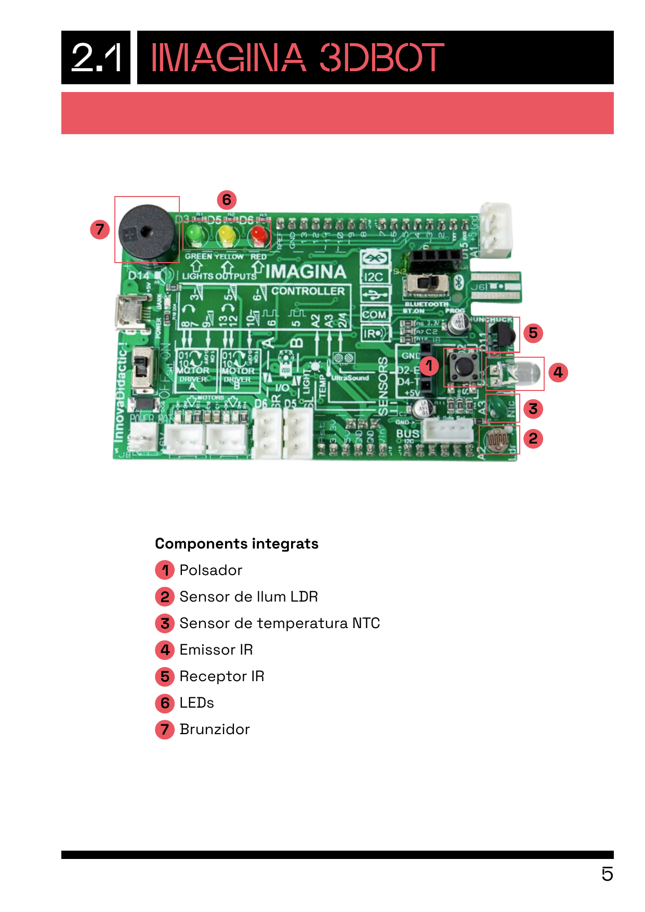

1. El Microcontrolador
Descobrim com funciona un sistema electrònic (Entrada ➔ Procés ➔ Sortida), coneixem la placa micro:STEAMakers (ESP32) i la shield Imagina 3dBot V4 amb els seus sensors, actuadors i pins.
💡 Les 3 idees clau sobre el Microcontrolador:
- 👀 Sensors (Entrada): Són els «sentits» de la placa (polsador, sensor de llum o receptor infraroig) que capten informació de l'entorn.
- 🧠 Microcontrolador (Procés): La micro:STEAMakers (ESP32) actua com el «cervell» que llegeix els sensors i decideix què fer.
- 💡 Actuadors (Sortida): Són els «músculs» (LEDs de colors i brunzidor) que produeixen llum o so.
1. Arquitectura del Sistema: Entrada (Sensors) ➔ Procés (ESP32) ➔ Sortida (Actuadors)
A les muntanyes de Pocona, el centre de salut d'una comunitat aïllada (com Laimiña o Pizorga) necessita un sistema electrònic autònom capaç de detectar una emergència mèdica i avisar l'Hospital de Cocaipata. Qualsevol sistema automatitzat o robot funciona igual que el cos humà, dividit en tres blocs:
Entrada (Sensors) ➔ Procés (Microcontrolador) ➔ Sortida (Actuadors)
Els Sensors (Els Sentits)
Capten magnituds físiques del món real (llum solar, pressió d'un botó o senyals infrarojos) i les transformen en senyals elèctrics que rep el microcontrolador.
- 🔘 Polsador tàctil: Detecta si algú prem el botó
- 📡 Receptor IR: Rep senyals infrarojos remots
- ☀️ Sensor de llum (LDR): Mesura la claror del dia
El Microcontrolador (ESP32)
És un petit ordinador complet dins d'un xip (amb processador i memòria). Llegeix la informació dels sensors, executa el nostre diagrama de flux i decideix què fer.
- 🌐 MicroBlocks Web: Programació visual per blocs
- 🔌 Connexió directa amb el Chromebook per cable USB
- 🔋 Autonomia: El programa queda desat a la memòria interna i funciona sol amb bateria!
Els Actuadors (Els Músculs)
Reben les ordres del microcontrolador i actuen sobre el món físic per donar una resposta visual, sonora o mecànica.
- 🚦 Llums LED (Verd, Groc, Vermell): Avisos visuals i triatge
- 🔊 Brunzidor piezoelèctric: Alarmes sonores i melodies
- 🔦 Emissor IR: Enviament de codis a distància
2. Coneixem la Placa Imagina 3dBot V4 i els seus Pins
La placa Imagina 3dBot V4 s'encaixa amb la micro:STEAMakers (ESP32). Per programar cada sensor o actuador a MicroBlocks, només necessitem saber quin número de pin li correspon:
🔍 Components Integrats i Pins que farem servir a MicroBlocks

📌 Quins pins fem servir a MicroBlocks (micro:STEAMakers)?
A la placa hi ha impresos noms antics (D2, D11, A2...), però a MicroBlocks amb micro:STEAMakers sempre posarem aquests números verificats:
- 🔴 LED Vermell: Pin
4· 🟡 Groc: Pin9· 🟢 Verd: Pin7 - 🔊 Brunzidor (So): Pin
6 - 🔘 Polsador: Pin
10 - 📡 Receptor IR (
D11): Pin15 - ☀️ Sensor de Llum (LDR ·
A2): Pin2
micro:STEAMakers perquè aquests números de pin funcionin directament!